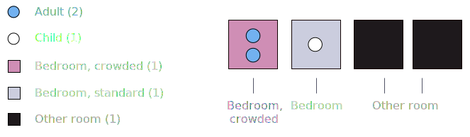

Living spaces - their size, quality, and structure - are critical to our well-being. What does housing look like in the most dense city in the US?
Every year, the American Census Survey (ACS) asks millions of households detailed questions about their living conditions - down to the exact room structure.
This project presents housing data drawn from the ACS in an exploratory visual format. Prior to diving into the data, let's talk a look at some summary statistics.
In this project, we define a 'living arrangement' as a distinct combination of adults, children, bedrooms, and other rooms (kitchen, office, storage, etc). The most common living arrangement follows.

Even though this is the most common living arrangement, it represents just 3.5% of all New Yorkers!
Summary statistics cannot capture the rich variety of housing and occupancy composition in New York. Now that we're warmed up, let's dive into the data, and explore New York housing data in detail.